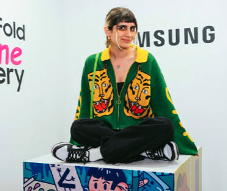

Currículum Liza Lolli
Resumen
Soy Liza Lolli, conocida también como Rori boi. Soy una ilustradora y programadora chilenda especializada en dibujar monitos feos y en la programación front-end.
Si quieres ver mi portafolio, ¡haz click aquí!
Datos personales
- Nombre: Liza Gabriella Lolli Torres
- Fecha de nacimiento: 11/12/1990
- Comuna: Ñuñoa
- Teléfono +56966666666
Formación
- Universidad de Playa Ancha, pedagogía en artes plásticas (2009 - 2011)
- Duoc UC, diseño gráfico (2012 - 2018)
- Duoc UC, ilustración (2013 - 2015)
- Desafío Latam, UX UI (2019)
- Acámica, frontend developer
- Desafío Latam, fullstack developer (2023)
Experiencia Laboral
- Leytonmedia (BCI), diseñadora gráfica (2019)
- Nuevo Capital, diseñadora UI / front (2019 - 2020)
- Cencosud, AB tester (2020 - 2022)
- Cencosud, software developer (2022 - actualidad)